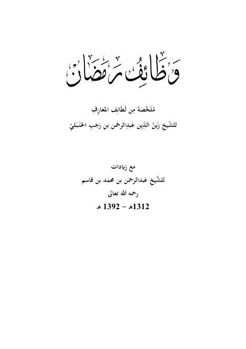

وظائف رمضان ملخصة من لطائف المعارف
Authors: ابن رجب الحنبلي
Editors: عبد الرحمن بن محمد القاسم
Download Downloads need an internet connection.
- Published
- 1312هـ 1392هـ
- Edition
- 1
- Volumes
- 1
- Pages
- 79
- Type
- كتاب
- Category
- الدعوة والاحتساب
Description
**▫️ العنوان: وظائف رمضان ملخصة من لطائف المعارف** ▪️ المؤلف: #ابن_رجب_الحنبلي ▫️ المحقق: #عبد_الرحمن_بن_محمد_القاسم ▪️ تاريخ النشر: 1312هـ 1392هـ ▫️ الطبعة: 1 ▪️ عدد الأجزاء: 1 ▫️ الصفحات: 79 ▪️ نوع الوعاء: #كتاب ▫️ التصنيف الرئيسي: #الدعوة_والاحتساب ۪